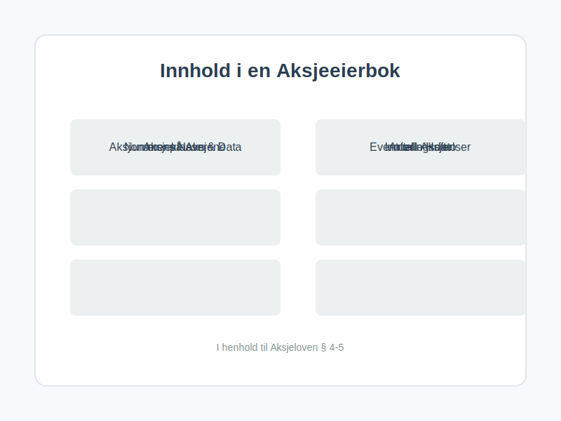

En aksjeeierbok er et register som alle norske aksjeselskaper (AS) er lovpålagt å føre. Den fungerer som selskapets offisielle, løpende oversikt over hvem som eier aksjene i selskapet. Tenk på det som en loggbok for eierskapet, som til enhver tid viser den nøyaktige fordelingen av aksjer og eiere.
Aksjeeierboken er ikke bare en intern formalitet; den er et juridisk bindende dokument som reguleres av aksjeloven. Den er avgjørende for å fastslå eierrettigheter, fordele utbytte, og for å kalle inn til generalforsamling.
Hvorfor er aksjeeierboken så viktig?
Aksjeeierboken er ryggraden i eierstyringen i et aksjeselskap. Uten en korrekt ført aksjeeierbok kan det oppstå tvil om hvem som har stemmerett, hvem som har krav på utbytte, og hvem som i det hele tatt er en rettmessig eier.
- Juridisk bevis: Boken er det definitive beviset på eierskap i selskapet. Den som er innført i aksjeeierboken, regnes som aksjeeier i alle sammenhenger.
- Rettigheter: Den danner grunnlaget for utøvelse av aksjonærrettigheter, som stemmerett på generalforsamling og retten til å motta utbytte.
- Offentlighet og transparens: Aksjeeierboken skal være offentlig tilgjengelig for alle som ønsker innsyn. Dette sikrer transparens rundt eierforholdene i norske selskaper.
- Salg og overdragelse: Ved salg av aksjer er det innføringen i aksjeeierboken som formelt overfører eierrettighetene til den nye eieren.
Hva skal en aksjeeierbok inneholde?
I henhold til aksjeloven § 4-5 stilles det klare krav til innholdet i en aksjeeierbok. Den må inneholde detaljert informasjon om hver aksjonær og deres aksjeinnehav.

Her er en oversikt over den obligatoriske informasjonen:
| Informasjonselement | Beskrivelse | Hvorfor er det viktig? |
|---|---|---|
| Aksjonærens navn og data | Fullt navn, fødselsnummer (for privatpersoner) eller organisasjonsnummer (for selskaper), og postadresse. | For entydig identifisering av eierne. |
| Antall aksjer | Hvor mange aksjer hver enkelt aksjonær eier. | Grunnlaget for å beregne eierandel, stemmerett og utbytte. |
| Aksjeklasser | Hvis selskapet har forskjellige aksjeklasser (f.eks. A- og B-aksjer med ulik stemmerett), må dette spesifiseres. | For å skille mellom aksjer med ulike rettigheter. |
| Innføringsdato | Datoen da aksjonæren ble innført i boken. | Viktig for å fastslå ansiennitet og rettigheter ved f.eks. utbytte. |
| Nummer på aksjene | Hvilke nummer aksjene har, hvis de er nummererte. | Gir en unik identifikator for hver aksje. |
| Eventuelle heftelser | Hvis aksjene er pantsatt eller det er andre heftelser, skal dette noteres. | Gir informasjon til potensielle kjøpere og kreditorer. |
Eksempel på oppføring i aksjeeierbok:
La oss si at “Test AS” har to eiere: Kari Nordmann og “Holding AS”.
-
Aksjonær 1:
- Navn: Kari Nordmann
- Fødselsnummer: 123456 78910
- Adresse: Eksempelveien 1, 0123 Oslo
- Antall aksjer: 500
- Aksjeklasse: A-aksje
- Innført dato: 01.01.2023
-
Aksjonær 2:
- Navn: Holding AS
- Organisasjonsnummer: 987 654 321
- Adresse: Investorveien 10, 5000 Bergen
- Antall aksjer: 500
- Aksjeklasse: A-aksje
- Innført dato: 01.01.2023
Hvordan føre en aksjeeierbok?
Aksjeeierboken kan føres på to måter:
- Manuelt: For mindre selskaper kan boken føres i et tekstbehandlingsdokument, et regneark, eller til og med i en fysisk bok. Det viktigste er at den inneholder all lovpålagt informasjon og holdes løpende oppdatert.
- Elektronisk: Det finnes mange digitale verktøy og plattformer som spesialiserer seg på eieradministrasjon. Disse systemene automatiserer mye av prosessen og sikrer at alt blir korrekt. For selskaper registrert i Verdipapirsentralen (VPS), vil registeret der fungere som selskapets aksjeeierbok.
Styret i selskapet har ansvaret for at aksjeeierboken blir opprettet, ført og oppbevart på en betryggende måte.
Offentlighet og innsyn
En viktig regel er at aksjeeierboken er offentlig. Enhver har rett til å be om innsyn i aksjeeierboken og få en utskrift av den. Dette er en sentral del av åpenheten i norsk næringsliv. Styret kan kun nekte innsyn dersom det er mistanke om at informasjonen vil bli brukt til skade for selskapet eller aksjonærene.
Aksjeeierboken vs. Aksjonærregisteret
Det er lett å blande sammen aksjeeierboken og Aksjonærregisteret. De er relaterte, men ikke det samme.

- Aksjeeierboken: Selskapets interne, løpende register. Den må være oppdatert til enhver tid. Den er grunnlaget for eierrettigheter.
- Aksjonærregisteret: En årlig rapport som alle norske aksjeselskaper må sende inn til Skatteetaten. Den gir en oversikt over eierforholdene per 31. desember hvert år og brukes til skatteformål, blant annet for å beregne formuesverdi på aksjene.
Man kan si at aksjeeierboken er “live”-versjonen, mens aksjonærregisteroppgaven (RF-1086) til Aksjonærregisteret er et øyeblikksbilde som sendes til myndighetene én gang i året. Informasjonen i Aksjonærregisteret hentes fra aksjeeierboken.
Oppdatering av aksjeeierboken ved eierskifte
Når en aksje skifter eier, enten ved salg, gave eller arv, må den nye eieren melde fra til selskapet for å bli innført i aksjeeierboken. Den nye eieren får ikke utøve sine rettigheter før innføringen har skjedd.
Prosessen er typisk som følger:
- Melding til selskapet: Kjøperen sender en melding til selskapets styre og dokumenterer eierskiftet, for eksempel med en kjøpsavtale eller et gavebrev.
- Styrets behandling: Styret skal uten ugrunnet opphold behandle meldingen og føre den nye eieren inn i aksjeeierboken.
- Bekreftelse: Selskapet skal gi melding til den nye eieren om at innføring er skjedd.
Det er viktig å merke seg at selskapets vedtekter kan inneholde bestemmelser om forkjøpsrett eller krav om styrets samtykke ved salg, noe som kan påvirke prosessen.
Konsekvenser av manglende eller feilaktig føring
Å ikke føre aksjeeierbok, eller å føre den feil, kan få alvorlige konsekvenser.
- Ugyldige beslutninger: Beslutninger tatt på generalforsamling kan bli kjent ugyldige hvis det er feil i hvem som er innkalt eller har fått stemme.
- Styreansvar: Styret kan bli holdt erstatningsansvarlig for tap som følge av feil i aksjeeierboken.
- Bøter: I alvorlige tilfeller kan manglende føring føre til bøter.
En korrekt og ajourført aksjeeierbok er derfor helt essensielt for en sunn og lovlydig drift av et aksjeselskap.